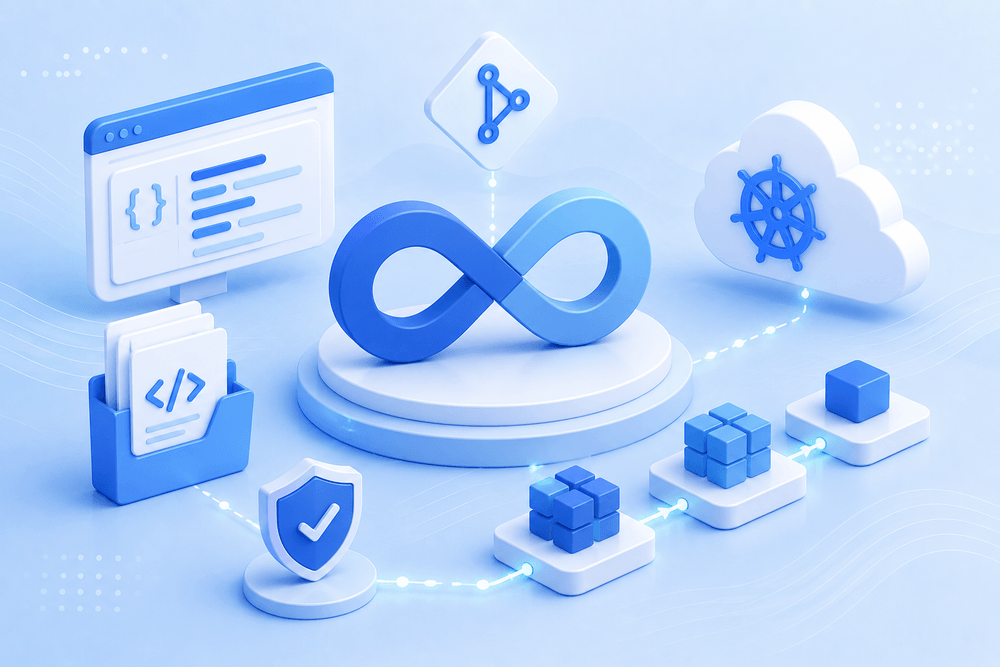

Abir Vision
I focus on creating intuitive digital experiences that solve real problems. My vision is to design clean, user-centered interfaces that are impactful, scalable, and easy to use.
Design and deploy secure, automated CI/CD pipelines and production-ready systems using Docker, Kubernetes, and modern DevOps practices.
I focus on creating intuitive digital experiences that solve real problems. My vision is to design clean, user-centered interfaces that are impactful, scalable, and easy to use.
Continuously grow as a designer while building thoughtful, user-centered digital products. He aims to create clean, scalable interfaces that deliver real value and meaningful user experiences.
Work Process
Assicivement
Earned this validation by passing the AWS exam focused on designing resilient, multi-tier cloud architectures. Through this, I mastered deploying highly available systems using EC2, S3, and VPC, while gaining deep expertise in secure access controls and cost-optimization strategies.
Secured this credential by demonstrating proficiency in cloud governance, virtual networking, and automated resource management. This equipped me with the practical skills to manage Azure Active Directory, configure secure networks, and streamline software delivery using Azure DevOps pipelines.
Achieved this certification by passing a demanding, performance-based live laboratory exam on Red Hat Enterprise Linux. This hands-on validation sharpened my skills in advanced system administration, shell scripting, automated storage provisioning, and infrastructure security hardening.
Core Mastery
Delivering Production-Grade Container Orchestration and robust Infrastructure-as-Code at Scale. My approach ensures resilience, security, and automated scalability.
Implementing Istio service mesh and Calico network policies to ensure granular security and mutual TLS across all microservices.
Leveraging ArgoCD and Helm to treat cluster state as code, ensuring 100% environment parity and rapid disaster recovery.
Letest — 2 MIN READ
October 24, 2023
Planned an AI-driven platform that surfaces idle spend across multi-account cloud estates and recommends rightsizing automatically.
Read more about Cloud Cost OptimizerLetest — 2 MIN READ
October 24, 2023
Planned a self-service platform giving product teams golden paths for provisioning, deployment, and observability without ticket queues.
Read more about Developer PlatformPortfolio
Date: 12.24.2023
Designed a complete observability solution for Kubernetes clusters and cloud resources. Integrated monitoring, logging, and alerting.
View project — Kubernetes Monitoring
Date: 12.24.2023
Kubernetes and version-controlled configurations. Reduced deployment errors through consistent and repeatable delivery.
View project — GitOps DeliveryDate: 12.24.2023
Provisioned and managed AWS infrastructure using Terraform and Kubernetes best practices. Implemented automated CI/CD.
View project — AWS EKS PlatformTestimonials
5.0
Based on 5 client reviews
I have used Abir's services for a few projects, and highly recommend him for design work. Highly focused with attention to details and delivering exceptional quality work. Thank you very much Abir!
Abir went above and beyond in delivering a very complete design. He delivered exceptional and perfect work in a fast turn around time. I look forward to working with him again.
It was great working with Abir and everything we wanted was achieved. We will definitely be back for more services and would recommend Abir to any of our business associates.
I really enjoyed working with Abir. Very responsive, creative and generous with his time. I will be coming back again for future design needs.
Project was done extremely fast and exactly what I was looking to have done. Will definitely use Abir for future projects!
Deep Knowledge
Jenkins | Docker | GitHub Actions | CI/CD
Docker | Linux | Networking | DevOps
Kubernetes | CKA | Networking | Cloud
I'm a DevOps Engineer with a strong foundation in Computer Science and product development. With over 7 years in the tech industry, I bring a unique blend of engineering precision and system-level thinking.
I design and deploy scalable cloud infrastructure, automate CI/CD pipelines, and build containerized production systems using AWS, Docker, Kubernetes, and modern DevOps practices.
My goal is simple: build reliable systems that help teams move faster with confidence.